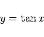
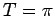
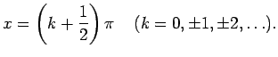
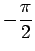
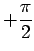
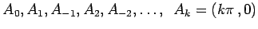
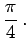
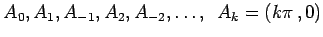
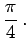

Inhalt Index DeskTop Bronstein

 Funktionen und ihre Darstellung Trigonometrische Funktionen (Winkelfunktionen) Grundlagen Definition und Darstellung
Funktionen und ihre Darstellung Trigonometrische Funktionen (Winkelfunktionen) Grundlagen Definition und Darstellung


Die Tangensfunktion
|  | (2.65) |
hat die Periode  und die Asymptoten 
Die Funktion wächst für x im Intervall von  bis  monoton zwischen  bis
bis  ; dieser Verlauf wiederholt sich periodisch. Die Schnittpunkte mit der x-Achse bei  sind zugleich Wendepunkte mit dem Tangentenneigungswinkel 
; dieser Verlauf wiederholt sich periodisch. Die Schnittpunkte mit der x-Achse bei  sind zugleich Wendepunkte mit dem Tangentenneigungswinkel 